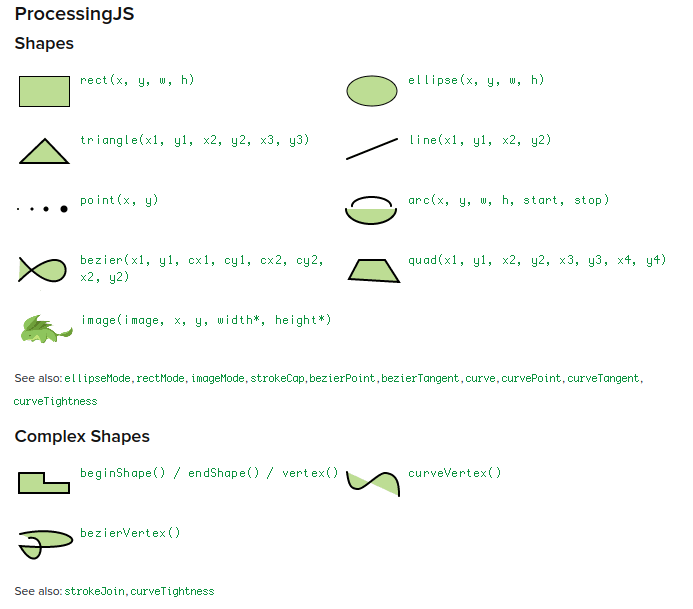
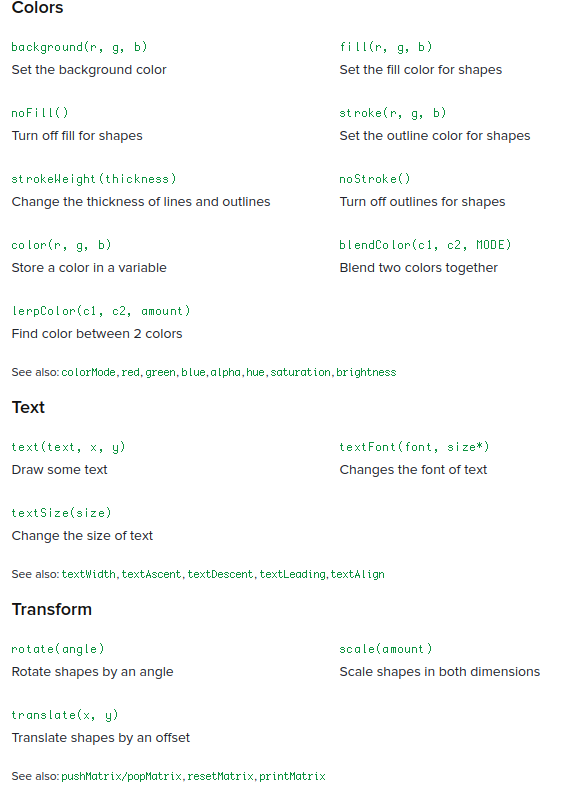
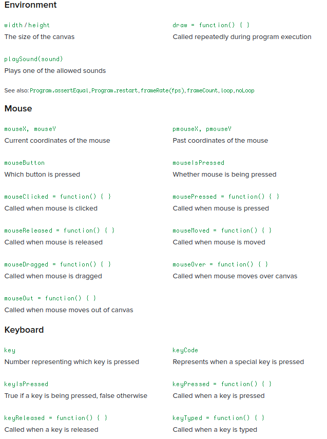
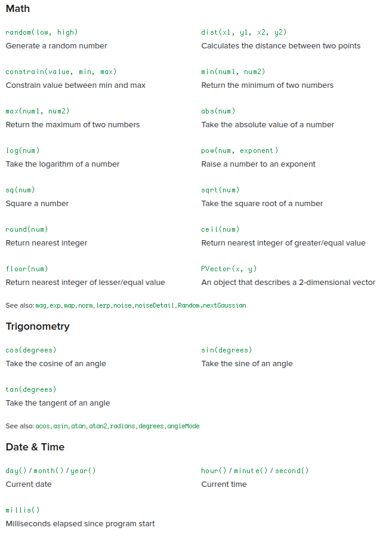

ProcessingJS is a JavaScript library for creating web based animation. It is a port of processing visualization language.
It is an starter for JavaScript.
Courtesy: ProcessingJS webpage
Processing.js is the sister project of the popular Processing visual programming language, designed for the web. Processing.js makes your data visualizations, digital art, interactive animations, educational graphs, video games, etc. work using web standards and without any plug-ins. You write code using the Processing language, include it in your web page, and Processing.js does the rest. It’s not magic, but almost.
Originally developed by Ben Fry and Casey Reas, Processing started as an open source programming language based on Java to help the electronic arts and visual design communities learn the basics of computer programming in a visual context. Processing.js takes this to the next level, allowing Processing code to be run by any HTML5 compatible browser, including current versions of Firefox, Safari, Chrome, Opera, and Internet Explorer. Processing.js brings the best of visual programming to the web, both for Processing and web developers.
Everything you need to work with Processing.js is here. You can download the most recent version of Processing.js, read Quick Start Guides for Processing Developers or JavaScript Developers, learn about the Processing language and Processing.js render modes, consult the Reference, and of course view many existing demos that use Processing.js. You can also get involved with the Processing and Processing.js communities, both of which are active and and looking for new users and developers.
Whether you’re an advanced Processing developer or completely new, whether you’re a pro with web technologies or just getting started, Processing.js bridges the gap between these two powerful technologies.
More details are to be found here in the main website
var varname1 = 340;
var varname;
varname = 40;var x = 10;
var a = x + 5; // add 5, result is 15
var b = x - 5; // subtract 5, result is 5
var c = x * 2; // multiply by 2, result is 20
var d = x / 4; // divide by 4, result is 2.5
var e = x % 4; // divide by 4 & return remainder, result is 2Courtesy: Khan Academy Webpage
   
// comment for single line comment. Use /* comments */ for multi line comments.draw is a predefined function, with no definition. draw function gets called over and over by other functions in ProcessingJS.<!DOCTYPE html>
<html lang="en">
<head>
<meta charset="UTF-8">
<title>Froggy</title>
</head>
<body>
<script src="processing.min.js"></script>
<script type="text/processing" data-processing-target="mycanvas">
// set up the canvas to draw
void setup()
{
size(400,400);
background(127, 127, 127);
}
// function to draw a frog face
void froggy(x1, x2)
{
var x = x1;
var y = x2;
noStroke();
fill(30, 204, 91); // a nice froggy green!
ellipse(x, y, 200, 100); // face
ellipse(x - 50, y - 50, 40, 40); // left eye socket
ellipse(x + 50, y - 50, 40, 40); // right eye socket
fill(255, 255, 255); // for the whites of the eyes!
ellipse(x - 50, y - 50, 30, 30); // left eyeball
ellipse(x + 50, y - 50, 30, 30); // right eyeball
fill(0, 0, 0); // for the mouth and eye pupils
ellipse(x, y, 120, 60); // mouth
rect(x-55, y-53, 10, 10); // left pupil
rect(x+45, y-53, 10, 10); // right pupil
}
// renders the frog images
void draw()
{
froggy(210, 260);
}
</script>
<canvas id="mycanvas"></canvas>
</body>
</html>void function_name()
{
// contents
}
void draw()
{
function_name();
}Also,
var function_name = function(args)
{
// contents
}
var draw = function()
{
function_name(args);
}Example.
// bear
void brown_bear()
{
noStroke();
var x = 200;
var y = 200;
var faceSize = 200;
var eyeSize = faceSize / 8;
// ears
var earSize=faceSize*1/2;
fill(89, 52, 17);
ellipse(x-faceSize*2/5, y-faceSize*2/5, earSize, earSize);
ellipse(x+faceSize*2/5, y-faceSize*2/5, earSize, earSize);
// face
fill(163, 113, 5);
ellipse(x, y, faceSize, faceSize);
//eyes
fill(0, 0, 0);
ellipse(x - faceSize / 4, y - faceSize / 8, eyeSize, eyeSize);
ellipse(x + faceSize / 4, y - faceSize / 8, eyeSize, eyeSize);
//nose
fill(89, 52, 20);
ellipse(x, y+faceSize/8, faceSize*4/15, faceSize/5);
}fill(0, 13, 255); // colour
textSize(38); // text size
textFont(createFont("Papyrus", 0), 20); // to change font
text("Sophia"+" "+"Trainer", 99, 96); // write text at the locationmouseX and mouseY are the mouse position variables.
var myName = "Sophia";
var message = myName + "!!!";
text(message, mouseX, mouseY); // using mouse positionsExample: Code to mark the mouse position and show it’s coordinates
void mouse_capture()
{
background(255, 255, 255);
var label = "(" + mouseX + "," + mouseY + ")";
ellipse(mouseX, mouseY, 12, 12);
text(label, mouseX, mouseY);
}
// function definition
var drawWinston = function(faceSize, xpos, ypos)
{
noStroke();
// var faceSize = 300;
var mouthSize = 1/2 * faceSize;
var eyeSize = 2/15 * faceSize;
var x = xpos;
var y = ypos;
// face
fill(255, 255, 0);
ellipse(x, y, faceSize, faceSize);
// eyes
fill(46, 46, 41);
ellipse(x - 1/6 * faceSize, y - 1/6 * faceSize, eyeSize, eyeSize);
ellipse(x + 1/3 * faceSize, y - 1/5 * faceSize, eyeSize, eyeSize);
// mouth
fill(252, 65, 65);
ellipse(x + 1/6 * faceSize, y + 2/15 * faceSize, mouthSize, mouthSize);
}
// function call
drawWinston(300, 200, 200);One can use void keyword as well.
var calcTotalDonuts = function(numYears, no_per_day)
{
return no_per_day * 365 * numYears;
};var lifeInches = 20; // global variable
var calcInches = function(startAge, endAge, inchesPerYear)
{
var totalInches = inchesPerYear * (endAge - startAge); // Local variable
lifeInches += totalInches;
return totalInches;
};
fill(255, 0, 0);
text("From 0-8 years:", 10, 20);
text(calcInches(0, 8, 2.5), 10, 40);
text("From 8-16 years:", 10, 100);
text(calcInches(8, 16, 2), 10, 120);
text("Total grown over life:", 10, 168);
text(lifeInches, 10, 200);mouseMoved functionThis is an inbuilt function with no definition, called by other ProcessingJS functions again and again. Based on the definition it is built using the mouse cursor variables, the function performs the contents specified.
mouseMoved = function()
{
fill(mouseX, mouseY, mouseY);
ellipse(mouseX, mouseY, 10, 10);
};if statementA moving ball reaches the edges and reverses direction. Speeds are random.
// position of the ball
var y = random(0, 400);
var x = random(0, 400);
// how far the ball moves every time
var speedx = 2;
var speedy = 2;
draw = function() {
background(127, 204, 255);
fill(66, 66, 66);
ellipse(x, y, 50, 50);
if (y > 375)
{
speedy = - random(0, 10);
}
if (y < 25)
{
speedy = random(0, 10);
}
if (x > 375)
{
speedx = - random(0, 10);
}
if (x < 25)
{
speedx = random(0, 10);
}
// move the ball
x = x + speedx;
y = y + speedy;
};mouseIsPressed keywordThis is a boolean keyword. If the mouse is pressed, then it will return a true value, else a false value.
draw = function()
{
if(mouseIsPressed)
{
ellipse(mouseX, mouseY, 20, 20);
}
};x > y;
x >= y;
x < y;
x <= y;
x !== y; // yeah, double equals
x === y; // yeah, triple equalsif (number < 50) // boolean condition
{
// statements
}
if (x > y) // some relational expression
var day = true
if(day) // relational expression using boolean variable
mouseX < 200 && mouseY < 200 // logical and
mouseX === 200 || mouseY === 200 // logical orvar number = random(0, 10); // generates a random number between 0 and 10
var integer = round(number) // rounds up if number's fraction part is greater than half, rounds down if the number's fraction part is less than half.if/else if/else statementif (integer === 0)
{
fill(132, 0, 255);
}
else if (integer === 1)
{
fill(255, 255, 0);
}
else if (integer === 2)
{
fill(255, 0, 0);
}
else
{
fill(0, 196, 255);
}println statementprintln("I am a print statement"); // prints in a new line
print("I am the real print statement"); // prints there itself.while loopwhile(x < 400)
{
print(x, x, 10);
x += 50;
}var image_variable = getImage("path/to/image");
image(image_variable, xpos, ypos);for loop// for(init/start; how long/condition; change/increment)
for(i=0; i<10; i++)
{
// statements
}
// nested for loops
for(i=0; i<10; i++)
{
for(j=0; j<10; j++)
{
// statements
}
}x += 20;
y -= 10;
z *= 20;
x /= 5;
x++;
++x;
y--;
--y;imageMode(CENTER); // put the image at centre
angleMode(DEGREE); // set angle to degreesFor full reference: https://www.w3schools.com/jsref/jsref_obj_array.asp
var names = ["Krishna", "Bharathi", "Uday"];
// index = 0, 1, 2, ...
println(names.length); // array length
println(names[1]); // access element 2
names.push("Muki"); // append a new element to the array
var numbers = [
[1, 2, 3],
[4, 5, 6],
[7, 8, 9]
]; // 2d array
println(numbers[1][1]) // prints 5
/*
Creating objects. Use key:value pairs.
This is also called as object literal.
Because you are literally creating an object from
scratch instead of using a template.
*/
var winston = {
age: 19,
eyes: "black",
likes: ["programming", "being programmed"],
isCool: true,
birthplace: {
city: "Mountain View",
state: "California"
}
};
// Accessing object values.
fill(0, 0, 0);
textSize(16);
text("All about Winston:", 10, 30);
text("Winston is " + winston.age + " years old", 10, 50);
text("Winston has " + winston.eyes + " eyes", 10, 70);
text("Winston likes " + winston.likes[0] + " and " + winston.likes[1], 10, 90);
text("Winston was born in " + winston.birthplace.city + ", " + winston.birthplace.state, 10, 110);
// change object entry
winston.age = 21;
winston.wife = "winnefer";// Array of objects. - Each entry of an array is an object with two variables.
var positions = [
{x: 99, y: 117},
{x: 294, y: 117},
{x: 101, y: 316},
{x: 294, y: 316}
];
// use the length method to get the length of objects too!
for (var i = 0; i < positions.length; i++) {
drawWinston(positions[i].x, positions[i].y);
}Essentially, create an object template to fill the object values later.
// template for an object - constructor funtion.
// this is called whenever a new object is called.
var Winston = function(nickname, age, x, y)
{
// this = refers to the variables inside the constructor.
this.nickname = nickname;
this.age = age;
this.x = x;
this.y = y;
}
// creating a winston object - object instance
var WinstonTeen = new Winston("Teenage Winston", 15, 20, 50);
var WinstonAdult = new Winston("Mr Winston", 30, 229, 50);Functions that are attached to objects.
// method associated with Winston object to draw it.
Winston.prototype.draw = function() {
fill(255, 0, 0);
var img = getImage("creatures/Winston");
image(img, this.x, this.y);
var txt = this.nickname + ", " + this.age;
text(txt, this.x+20, this.y-10);
};
// Calling the method for an object.
WinstonTeen.draw();// base object constructor
var Creature = function(nickname, age, x, y)
{
this.nickname = nickname;
this.age = age + "yrs old";
this.x = x;
this.y = y;
};
// talk method to the base constructor
Creature.prototype.talk = function()
{
text("Hello, World!", this.x+20, this.y+140);
};
// Setup for inheriting an Object to a new one
// This line initializes a new object and then defines
// additional information for modification.
var Hopper = function(nickname, age, x, y)
{
Creature.call(this, nickname, age, x, y);
};
// New Object Inherited from creature
// prototype chain
Hopper.prototype = Object.create(Creature.prototype);
// Additional method - to draw the animal
Hopper.prototype.draw = function()
{
fill(217, 90, 0);
var img = getImage("creatures/Hopper-Happy");
image(img, this.x, this.y);
var txt = this.nickname + ", " + this.age;
text(txt, this.x+10, this.y-7);
};
// Another additional method - to call hooray!
Hopper.prototype.hooray = function()
{
text("Hooooray!!!", this.x+29, this.y+140);
};
// Another Object based on Creature object
// Initialization
var Winston = function(nickname, age, x, y)
{
Creature.call(this, nickname, age, x, y);
};
// inheritance. Prototype chain
Winston.prototype = Object.create(Creature.prototype);
// Additional function
Winston.prototype.draw = function()
{
fill(255, 0, 0);
var img = getImage("creatures/Winston");
image(img, this.x, this.y);
var txt = this.nickname + ", " + this.age;
text(txt, this.x+20, this.y-10);
};